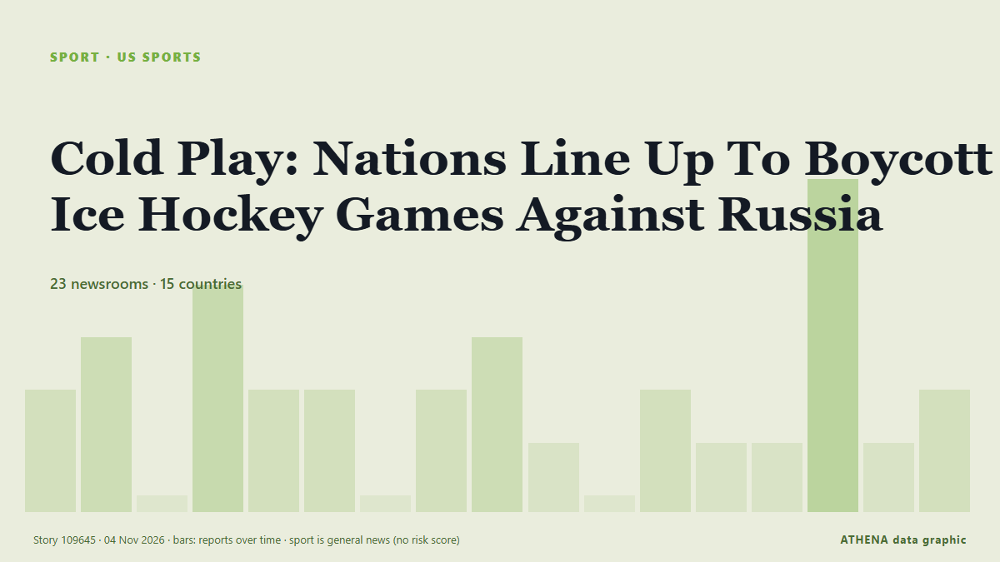

Cold Play: Nations Line Up To Boycott Ice Hockey Games Against Russia

A growing list of countries are lining up against a court decision allowing Russia to rejoin international ice hockey events, saying they will boycott any team Moscow sends, putting the World… from RFE/RL (English)
Reported independently by 23 outlets in 15 countries since 3 Nov, first by Yle News (alternative feed); coverage is fading. Sport and culture stories are filed, not risk-assessed. Confidence is 90% (high), with 23 independent outlets corroborating it and an average source reliability of 75%. Newsrooms by country: Russia (6), Canada (4), Ukraine (4). Coverage: 3 Nov to 4 Nov, 33 hours.
What changed: 22 new reports from 18 newsrooms in the 24 hours to 4 Nov.
First reported as: Finland refuses to play Russia at ice hockey world championships
At a glance
Selected, scored and written by ATHENA's published methodology. No editor intervenes in individual events. How this is produced ›
| 03 Nov 08:46 UTC | 2 |
|---|---|
| 03 Nov 10:46 UTC | 3 |
| 03 Nov 12:46 UTC | 0 |
| 03 Nov 14:46 UTC | 4 |
| 03 Nov 16:46 UTC | 2 |
| 03 Nov 18:46 UTC | 2 |
| 03 Nov 20:46 UTC | 0 |
| 03 Nov 22:46 UTC | 2 |
| 04 Nov 00:46 UTC | 3 |
| 04 Nov 02:46 UTC | 1 |
| 04 Nov 04:46 UTC | 0 |
| 04 Nov 06:46 UTC | 2 |
| 04 Nov 08:46 UTC | 1 |
| 04 Nov 10:46 UTC | 1 |
| 04 Nov 12:46 UTC | 6 |
| 04 Nov 14:46 UTC | 1 |
| 04 Nov 16:46 UTC | 2 |
Why these numbers
Importance
Risk
Confidence
The reporting — who reported it, and when
headline as published · opens the original- Yle News (alternative feed) · FinlandFinland refuses to play Russia at ice hockey world championships
- Yle News — page reader · FinlandFinland refuses to play Russia at ice hockey world championships
- CNA (Channel NewsAsia) · SingaporeIce hockey-Norway, Denmark and Sweden refuse to play Russia at 2027 Ice Hockey World Cup
- CBC News (alternative feed) · CanadaPrime Minister says Russia will not be allowed to compete at 2026 world juniors in Alberta
- The Local Norway · NorwayNorway to snub Russia at ice hockey world championships
- ESPN · United StatesHockey worlds boycott grows as 6 of 16 nations join over Russia reinstatement
- Al Jazeera English · QatarNordic nations refuse to face Russia in ice hockey World Championship
- Kyiv Independent · UkraineTop European nations vow to boycott Ice Hockey World Championship if Russia returns
- Türkiye Today · TurkeyNordic countries refuse to play Russia at ice hockey championships
- The Moscow Times · RussiaNorway, Denmark, Sweden, Latvia and Czech Republic to Boycott Russia at 2027 Ice Hockey World Championship
- Meduza (English) · RussiaSweden, Finland, and three other countries say they’ll boycott hockey games against Russia after the Court of Arbitration for Sport reinstates the Russian team
- TASS (English) · RussiaRussia to report countries boycotting IIHF matches it will be in, says sports chief
- LSM English · LatviaLatvian hockey teams will still not play against Russia
- CNA (Channel NewsAsia) · SingaporeCanada will not let Russians compete at ice hockey tournament, says Carney
- APA (English) · AzerbaijanCanada to refuse visas to Russian hockey players
- TASS (English) · RussiaCanada to deny visas to Russian hockey players — PM Carney
- The Guardian · United KingdomCanada joins coalition refusing to play ice hockey against Russia over Ukraine war
- Kyiv Independent · UkraineCanada to block Russian team from World Junior Hockey Championship, Carney says
- Kyiv Post · UkraineCanada to Bar Russian Hockey Team From World Juniors Over War
- Meduza (English) · RussiaCanada’s prime minister vows to bar Russian hockey players from world junior championship
- CNA (Channel NewsAsia) · SingaporeSkoda Auto to reassess ice hockey championship role if Russia takes part
- The Moscow Times · RussiaRussia Will Not Compete at World Junior Hockey Championship in Canada, PM Carney Says
- Euronews English · FranceHockey nations refuse to play Russia as Germany weighs pulling out as host
- CBC News (alternative feed) · CanadaHockey world championship main sponsor Skoda to 'reassess' backing if Russia plays
- RFE/RL (English) · INTCold Play: Nations Line Up To Boycott Ice Hockey Games Against Russia
- DW English · GermanyLeading ice hockey nations, sponsors oppose Russia's return
- Ukrainska Pravda (English) · UkraineCanadian PM on World Junior Ice Hockey Championship: Russians will not be there
- The Independent · United KingdomIce hockey world championship sponsors increase pressure on IIHF over Russia's return
- City A.M. · United KingdomIce Hockey World Championships sponsor threatens to pull out over Russia
- Arab News · Saudi ArabiaSkoda to ‘reassess’ ice hockey worlds support over Russia
- CBC News (alternative feed) · CanadaCanada dismisses fears of international blowback over Russian world junior hockey ban
- The Canadian Press (via CityNews) · CanadaTimeline: How Russia’s hockey comeback bid collided with Canada